O raciocínio por contagem é a primeira e mais intuitiva ferramenta na resolução de problemas de tabuleiros. Inicialmente, um simples argumento de área, paridade ou divisibilidade pode ser suficiente para verificar a impossibilidade de uma cobertura. Nesta seção, começamos com argumentos simples de área, paridade e divisibilidade, que já são suficientes para resolver diversos problemas de cobertura.
Exemplo1.2.1.
É possível cobrir um tabuleiro \(2025\times 2025\) com dominós (peças \(2\times 1\))?
O tabuleiro possui uma quantidade ímpar de casas. Com dominós, não é possível cobrir uma quantidade ímpar de casas. Logo, não é possível cobrir o tabuleiro com os dominós.
Exemplo1.2.2.Rússia adaptado.
Podemos cobrir um tabuleiro \(5\times 7\) com \(L\)-triminós?
Note que um \(L\)-triminó tem 3 casas. Logo ele cobre exatamente 3 casas do tabuleiro. Como só temos esse tipo de peça, a quantidade de casas do tabuleiro coberta por essas peças tem que ser múltipla de 3. O nosso tabuleiro tem \(5\cdot 7=35\) casas, logo não pode ser coberto por \(L\)-triminós.
Exemplo1.2.4.[livro].
Determine se é possível cobrir um tabuleiro \(8\times 8\) do qual foram retiradas a primeira casa e a casa diagonalmente oposta usando apenas dominós (peças \(2\times 1\))?
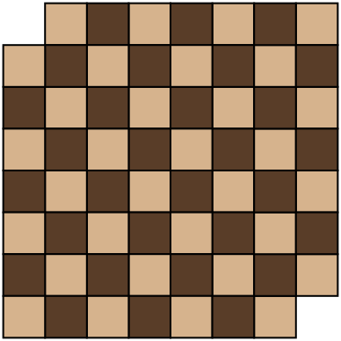
Figura1.2.5.Tabuleiro \(8\times 8\) com a remoção da primeira casa e a casa diagonalmente oposta.
Observe que, neste tabuleiro, foram removidas duas casas escuras. Cada peça de dominó sempre cobre uma casa clara e uma escura no tabuleiro. Deste modo, se fosse possível cobrir o tabuleiro usando apenas dominós, deveríamos ter o tabuleiro com a quantidade de casas escuras igual à quantidade de casas claras. Neste tabuleiro existem 32 casas claras e 30 casas escuras. Logo, não é possível fazer tal cobertura.
Exemplo1.2.6.
Determine se é possível cobrir um tabuleiro \(8\times 8\) do qual foram retiradas duas casas, conforme a Figura Figura 1.2.7 usando apenas dominós (peças \(2\times 1\))?
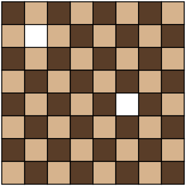
Figura1.2.7.Tabuleiro \(8\times 8\) com duas casas de cores distintas removidas.
Figura1.2.8.Cobertura do Tabuleiro da Figura Figura 1.2.7 usando dominós.
De fato, o Exemplo Exemplo 1.2.6 é um caso particular do seguinte teorema:
Teorema1.2.9.Teorema de Gomory [gardner2006colossal].
Seja um tabuleiro de xadrez de dimensões \(m \times n\text{,}\) onde o produto \(mn\) é um número par. Se removermos do tabuleiro exatamente duas casas de cores opostas (uma clara e uma escura), a malha resultante sempre admitirá uma cobertura perfeita utilizando exclusivamente peças de dominó \(2 \times 1\text{.}\)
Nota1.2.10.
Ralph E. Gomory foi um destacado matemático norte-americano e um dos pioneiros da programação inteira e da pesquisa operacional, tendo também desempenhado papel de grande relevância na pesquisa científica da IBM. No contexto da matemática olímpica, seu nome está associado ao chamado Teorema de Gomory, que trata de maneira elegante do problema de recobrir, com peças de dominó, tabuleiros com casas removidas. A demonstração desse resultado apoia-se na modelagem do tabuleiro por meio de grafos e na construção de ciclos hamiltonianos. Como tais ferramentas se afastam do enfoque combinatório adotado neste trabalho, a prova formal do teorema foge ao escopo deste artigo. Para saber mais sobre Gomory veja [gomory].
Exemplo1.2.11.Seletiva Fortaleza – Rioplatense/2012 – Nível A [Seletiva].
Benjamim tem 25 peças A e 25 peças B, cujos formatos estão mostrados na figura.
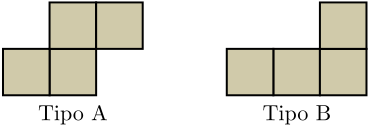
Figura1.2.12.Peças do tipo A e B.
Com as 50 peças, Benjamim pretende cobrir um tabuleiro completamente, sem deixar buracos e nem fazer sobreposições. Ele sabe que cada quadradinho da peça A e que cada quadradinho da peça B tem 1 cm\(^2\) de área. Sabendo que ele pode girar as peças do jeito que ele quiser, podendo inclusive "inverter" qualquer peça, pergunta-se:
Se o tabuleiro for \(8\times 8\) (ou seja, ele tiver 8 cm de comprimento por 8 cm de largura), é possível que ele consiga cobrir todo o tabuleiro?
Se o tabuleiro for \(8\times 9\text{,}\) é possível que ele consiga cobrir todo o tabuleiro?
Se o tabuleiro for \(9\times 9\text{,}\) é possível que ele consiga cobrir todo o tabuleiro?
Se todas as casas acima de uma diagonal do tabuleiro \(8\times 8\) forem retiradas (veja Figura Figura 1.2.13), é possível que ele consiga cobrir todo o tabuleiro?
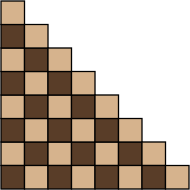
Figura1.2.13.Tabuleiro \(8\times 8\) sem as casas acima da diagonal principal.
Os dois tipos de peças possuem área 4 cm\(^2\) e o tabuleiro possui área \(8\times 8 = 64\) cm\(^2\) que é múltiplo de 4. Vamos mostrar que é possível fazer a cobertura. Juntando duas peças do tipo B, obtemos um retângulo \(2\times 4\) e com 8 desses retângulos podemos cobrir o tabuleiro, conforme a figura abaixo:
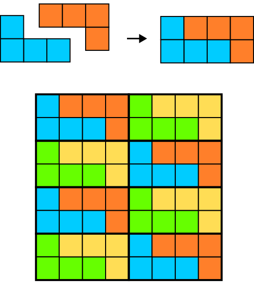
Figura1.2.14.Cobertura do tabuleiro \(8\times 8\) utilizando peças do Tipo B.
Os dois tipos de peças possuem área 4 e o tabuleiro possui área \(8\times 9\) que é múltiplo de 4. Vamos mostrar que é possível fazer a cobertura. Juntando duas peças do tipo A e uma do tipo B podemos obter um retângulo \(4\times 3\text{.}\) Utilizando 6 desses retângulos podemos fazer a cobertura, conforme na figura a seguir.
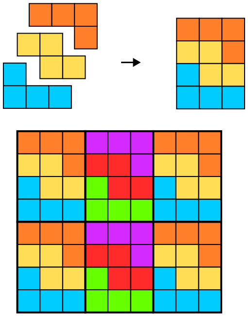
Figura1.2.15.Cobertura do tabuleiro \(8\times 9\) utilizando peças do Tipo A e B.
O tabuleiro possui área \(9\times 9\) que não é múltiplo de 4. Portanto, não é possível fazer a cobertura.
A área do tabuleiro é \(1+2+\cdots+8 = 36\) que é múltiplo de 4. Porém, vamos mostrar que não é possível cobrir o tabuleiro. Na coloração do tabuleiro de xadrez, os dois tipos de peças cobrem duas casas claras e duas casas escuras. O tabuleiro do item (d) possui 20 casas claras e 16 casas escuras, portanto não é possível fazer a cobertura.
Exemplo1.2.16.Rússia 1997 [poti].
Podemos cobrir um tabuleiro \(75\times 75\) usando dominós e cruzes (peça de 5 quadrados)?
Utilizando a coloração de um tabuleiro de xadrez atribua o valor \(1\) para cada casa escura e o valor \(-1\) para cada casa clara.
Supondo que a casa que fica no canto esquerdo superior é escura, o tabuleiro possui \(\frac{75^2+1}{2}=2813\) casas escuras e \(\frac{75^2-1}{2}=2812\) casas claras. Portanto, a soma dos valores de todas as casas deste tabuleiro é
Analisando a soma dos valores que cada peça pode cobrir, observamos que
Uma peça de Dominó cobre uma casa clara \((-1)\) e uma escura \((+1)\text{.}\) O valor dessa cobertura é \(0\text{.}\)
Uma peça em forma de Cruz com centro escuro cobre 4 casas claras e 1 escura. O valor dessa cobertura é \(-3\text{.}\)
Uma peça em forma de Cruz com centro claro cobre 1 casa clara e 4 escuras. O valor dessa cobertura é \(3\text{.}\)
Seja \(D\) o número de dominós, \(C_E\) o número de cruzes com centro escuro e \(C_C\) o número de cruzes com centro claro. Para que a cobertura seja possível é necessário que a seguinte equação admita solução nos inteiros não negativos:
ou seja, \(C_C - C_E = \frac{1}{3}\) precisa admitir solução com \(C_E\) e \(C_C\) inteiros, o que é um absurdo.
Subseção1.2.1Coloração com Mais Cores
Em muitos problemas de cobertura, a tradicional coloração com duas cores não é suficiente para resolvê-los. Em alguns casos, torna-se natural recorrer a colorações com três ou mais cores. Esse refinamento permite obter novos invariantes e, com eles, demonstrar impossibilidades ou localizar posições especiais em uma cobertura.
Exemplo1.2.18.[Excalibur].
Um tabuleiro \(5\times 5\) é coberto por oito peças \(1\times 3\) e uma peça \(1\times 1\text{.}\) Justifique por que a peça \(1\times 1\) deve ficar exatamente na casa do centro do tabuleiro.
Vamos pintar o tabuleiro com as três cores da seguinte forma:
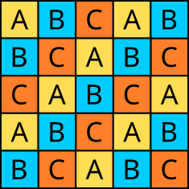
Figura1.2.19.Tabuleiro \(5\times 5\) com 3 cores.
Observe que o tabuleiro tem 8 casas com a cor A, 9 com a cor B e 8 com a cor C. Colocando uma peça \(1\times 3\) sobre o tabuleiro, ela sempre vai cobrir uma casa de cada cor. Concluímos que a peça \(1\times 1\) deve estar sobre uma casa da cor B. Vamos girar o tabuleiro 90 graus no sentido horário obtendo a nova coloração:
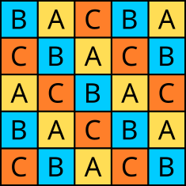
Figura1.2.20.Rotação do tabuleiro da Figura Figura 1.2.19.
Pelo mesmo argumento anterior, a distribuição de cores se mantém (8 casas da cor A, 9 casas da cor B, 8 casas da cor C). Logo, a peça \(1\times 1\) também deve ocupar uma casa da cor B nesta nova configuração.
Para satisfazer ambas as condições simultaneamente, a posição da peça deve estar na interseção. Observando as duas figuras sobrepostas, a única casa que possui a cor B na primeira pintura e a cor B na segunda pintura é a casa central. A seguir, exibimos uma cobertura válida:
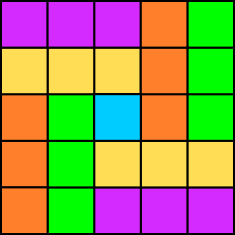
Figura1.2.21.Uma cobertura válida.
Subseção1.2.2Coloração Listrada
Em vários problemas de cobertura, a coloração de xadrez não é a mais adequada para revelar a estrutura envolvida. Nesses casos, pode ser mais conveniente adotar uma coloração em faixas alternadas, pintando, por exemplo, colunas consecutivas com cores diferentes. Essa estratégia, que chamaremos de coloração listrada, permite analisar com mais precisão como cada peça ocupa o tabuleiro e pode tanto excluir certas coberturas quanto determinar quais configurações são possíveis. Nesta seção, veremos exemplos em que essa ideia se mostra especialmente útil.
Exemplo1.2.22.Estônia 1993 [estonia].
Para quais naturais \(n\) é possível cobrir um retângulo de tamanho \(3 \times n\) com as peças mostradas na Figura Figura 1.2.23?
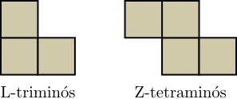
Figura1.2.23.Peças \(L\)-triminó e \(Z\)-tetraminó.
Pinte o tabuleiro com números da seguinte forma: as linhas 1 e 3 com o número 1, e a linha 2 com o número \(-1\text{.}\) A soma de todos os números no tabuleiro é \(n\text{.}\)
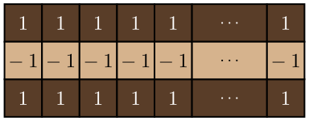
Figura1.2.24.Tabuleiro \(3\times n\) com coloração listrada e atribuição de valores às casas.
Veja que a soma dos números cobertos por um \(Z\)-tetraminó é sempre zero. A soma dos números cobertos por um \(L\)-triminó é sempre 1 ou \(-1\) (veja as Figuras Figura 1.2.25 e Figura 1.2.26). Para cobrir o tabuleiro, a soma total dos números cobertos pelas peças deve ser \(n\text{.}\)
Se colocarmos as peças do tipo L de modo que a soma das casas seja 1, é possível completar o tabuleiro de 2 em 2, de modo que a soma seja 2 a cada duas colunas.
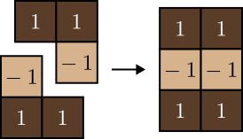
Figura1.2.25.Juntando duas peças \(L\)-triminós, cada uma com soma igual a \(1\text{.}\)
No final chegaremos em \(n\text{,}\) se \(n\) for par. Então para qualquer \(n\) par, podemos completar o tabuleiro apenas com \(L\)-triminós.
Se adicionarmos uma \(Z\)-tetraminó ao tabuleiro, a soma máxima de todas as peças será \((n-2)\text{,}\) pois cada \(Z\)-tetraminó possui soma zero e após adicionar uma peça deste tipo, no máximo cabem \((n-2)\)\(L\)-triminós, portanto a soma máxima possível é \((n-2)\text{.}\) Logo, não podemos utilizar \(Z\)-tetraminós.
Vamos mostrar que \(n\) não pode ser ímpar. Como não podemos utilizar as peças \(Z\)-tetraminós, vamos analisar configurações com as peças \(L\)-triminós. Para cada peça do tipo L colocada como na Figura Figura 1.2.26,
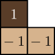
Figura1.2.26.\(L\)-triminó com soma \(-1\text{.}\)
a soma será igual a \(-1\) e a soma total da cobertura será menor que \(n\text{.}\) Como toda peça deve contribuir com soma \(+1\text{,}\) cada \(L\)-triminó ocupa exatamente duas casas de uma das linhas extremas e uma casa da linha central. Isso força o recobrimento a se organizar em blocos \(3 \times 2\text{,}\) como na Figura Figura 1.2.25. Portanto, \(n\) deve ser par.
Exemplo1.2.27.
Mostre que é impossível cobrir um tabuleiro \(10\times 10\) utilizando apenas \(L\)-tetraminós.
Vamos fazer uma coloração listrada nesse tabuleiro, conforme a Figura Figura 1.2.28. Perceba que independentemente de como seja colocada no tabuleiro, um \(L\)-tetraminó sempre cobre 1 casa escura e 3 claras ou 3 escuras e 1 clara como na figura abaixo:
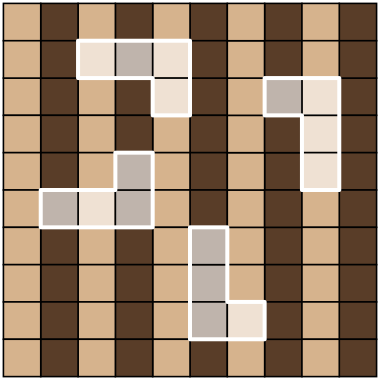
Figura1.2.28.Tabuleiro \(10 \times 10\) com coloração listrada na vertical.
Vamos chamar de \(x\) a quantidade de \(L\)-tetraminós que cobrem 3 casas claras e uma escura do tabuleiro e de \(y\) as que cobrem 3 casas escuras e uma clara. Logo, temos o sistema:
\begin{equation*}
\begin{cases}
x+y=25\\
3x+y=50 ~~\text{(nº de casas claras)}\\
x+3y=50 ~~\text{(nº de casas escuras)}.
\end{cases}
\end{equation*}
Multiplicando a primeira equação por 3 e subtraindo pela segunda equação, obtemos \(2y=25\text{.}\) Absurdo, pois \(x\) e \(y\) são números inteiros. Logo, não podemos cobrir o tabuleiro \(10\times 10\) apenas com esses tipos de peças.
Subseção1.2.3Outros Tipos de Coloração
Embora as colorações de xadrez, listrada e com mais cores sejam especialmente frequentes, elas estão longe de esgotar as possibilidades. Em muitos problemas, a chave da solução está em construir uma coloração adaptada à peça ou à configuração estudada, de modo a destacar alguma regularidade que não seria percebida pelas colorações mais usuais.
Exemplo1.2.29.[Excalibur].
Um tabuleiro \(8\times 8\) pode ser coberto por 15 peças \(1\times 4\) e uma peça \(2\times 2\) sem que haja sobreposição?
Vamos colorir esse tabuleiro com a coloração dupla diagonal:
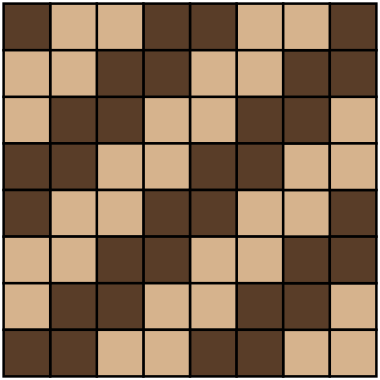
Figura1.2.30.Tabuleiro \(8\times 8\) com coloração dupla diagonal.
Nessa coloração temos 32 casas claras e 32 escuras. Cada peça \(1\times 4\) cobre duas claras e duas escuras independentemente de como for colocada no tabuleiro. E a peça \(2\times 2\) cobre uma casa escura e três claras ou cobre três casas escuras e uma clara.
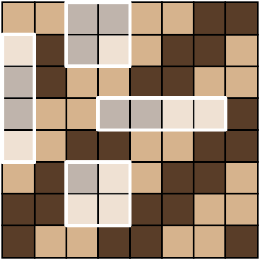
Figura1.2.31.Tabuleiro \(8\times 8\) com coloração dupla diagonal e algumas peças sobre o tabuleiro.
Logo, as 15 peças \(1\times 4\) cobrem 30 casas escuras e 30 casas claras. Com a adição da peça \(2\times 2\text{,}\) teríamos a cobertura de 31 casas escuras e 33 claras ou 33 casas escuras e 31 claras. Portanto, concluímos com esta contagem que tal cobertura é impossível.
Subseção1.2.4
Problema1.2.32.
Podemos cobrir um tabuleiro \(10 \times 10\) usando apenas T-tetraminós como abaixo?
Pinte o tabuleiro de branco e preto da maneira usual (como no xadrez). Note que ao colocarmos um T-tetraminó no tabuleiro ele pode assumir colorações do tipo 1 (1 casa branca e 3 pretas) ou tipo 2 (3 casas brancas e 1 preta).
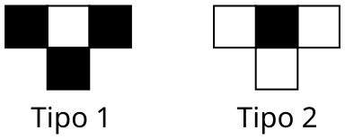
Figura1.2.34.
Suponha que ao cobrir o tabuleiro usamos A peças do tipo 1 e B do tipo 2. Sabemos que devemos usar 25 peças no total, ou seja, \(A+B=25\text{.}\)
Cada peça do tipo 1 possui uma casa branca e cada peça do tipo 2 possui 3 casas brancas, e como temos ao todo 50 casas brancas no tabuleiro, temos a equação: \(A + 3B = 50\text{.}\) De modo análogo, para as 50 casas pretas, obtemos \(3A + B = 50\text{.}\)
Porém, o sistema:
\begin{equation*}
\begin{cases}
A + B &= 25\\
A + 3B &= 50\\
3A + B &= 50
\end{cases}
\end{equation*}
não possui solução inteira. Logo, não é possível cobrir o tabuleiro.
Problema1.2.35.
Sobre uma das casas de um tabuleiro infinito, existe um cubo que cobre a casa perfeitamente. A face no topo do cubo é branca, enquanto as demais faces são pretas. A cada passo, podemos tombar o cubo para um dos lados. É possível que:
Após 2004 passos o cubo volte ao mesmo quadrado com a face branca para baixo?
Sim. Vire o cubo duas vezes para a direita, uma para baixo, duas para a esquerda e uma para cima (figura 4). Após estes seis passos, a face branca estará virada para baixo. Sobram 1998 passos, basta tombar repetidamente o cudo para direira e para esquerda.
Figura1.2.36.
Não. Pinte o tabuleiro na maneira usual. Note que, a cada movimento, o cubo muda de uma casa preta para uma casa branca e vice-versa. Logo, após um número ı́mpar de movimentos não poderá estar na casa inicial.
Problema1.2.37.
É possível cobrir o tabuleiro a seguir usando apenas dominós?
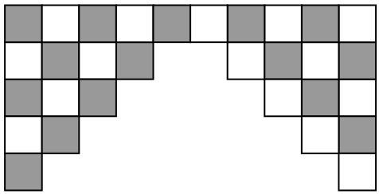
Figura1.2.38.
Problema1.2.39.
(OBM/2012 – N2 – 2ª fase – Q1) João gosta de verificar propriedades do jogo de xadrez em um tabuleiro \(5 \times 5\text{.}\) Num de seus experimentos, João coloca um cavalo na casa inferior esquerda do tabuleiro \(5 \times 5\text{.}\) Qual o número mínimo de movimentos do cavalo para que ele possa chegar a qualquer casa do tabuleiro \(5 \times 5\text{?}\)
Observação: O cavalo movimenta-se em L, isto é, anda duas casas em uma direção e, logo em seguida, uma casa na direção perpendicular, como ilustrado na figura.
Vamos colorir cada casa do tabuleiro \(5 \times 5\) com o número \(i\) quando o cavalo precisar de no mínimo \(i\) movimentos para chegar a tal casa do tabuleiro. Comecemos, então, pelo \(1\text{:}\)
Figura1.2.41. Portanto, a resposta é \(4\text{.}\)
Problema1.2.42.
É possível cobrir um tabuleiro \(5 \times 10\) usando apenas peças como abaixo?